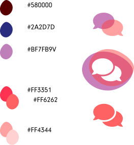

co lab
Co lab is a cloud storage application designed to humanize collaboration and communication and help to build organization within projects.

ROLE:
Research, UX Design, Prototyping, UI Design
TOOLS:
Figma, Adobe CC, Colorable, Survey Swap
DELIVERABLES:
Figma, Adobe CC, Colorable, Survey Swap
overview
the user is being overwhelmed by multiple tools and is losing productivity to distraction. the principle of co lab is to facilitate effective collaboration, organization and communication to remove this distraction.


research
key survey results
I have surveyed 20 people through online platform survey swap.

competitive analysis
after performing a basic swot analysis I have identified opportunites on the market. the key opportunity is to humanize collaboration and help users with their folder organization.
user persona
john k.
Senior graphic designer

"if I could improve one thing it would be to humanize virtual communication with my team and clients"
key insights
- help to organize files
- humanize collaboration
- build uninterrupted workflow
information architecture
I reviewed all aspects of my research and built high priority user stories and user flows.
user stories
- I want to plan my folder organization
- I want to communicate with others
- I want to collaborate with others
- I want to share with other
- I want to locate my files
user flows
As a user I want to ...


prototype
having all the necesary information I sketched screens for the web onboarding interface and the primary aplication including the three main screens. files. co lab and talk.
sketches

wireframe
testing
before building any time consuming hi-fidelity mockups I test my wireframes and make necessary adjustments


visual design
co lab wants to bring a simplicity and fun and also differentiate itself from the competition. what is the emotion we want to share with the user? we want to be fun and welcoming and that is why we have chosen warm tones, playful typography and comic illustrations.
typography

color palette
illustrations


hi-fidelity
hi fidelity mock-ups were composed to bring together the research, strategy and visual design. the key colab concepts were fully flushed out to create a delightful experience for the user.

testing
user testing was a great learning experience to make sure the product fits the user needs. I user tested with small group of professionals between the ages of 23 and 45 years.


conclusion
in this project I worked with three different critical productivity tools and designed an interface that allows for the uninterrupted workflow between each of these tools. this allows uploading files into pre-designed organizational file structures, real time infile collaborating with other users, and facilitating discussions as well as planning without leaving an individual app.
self-reflection
with the 20/20 of hindsight I would have allocated a lot more resources to initial research. while observing the user behavior in user testing it was apparent that I worked with a lot of assumptions that I created early on. it is always easier to design with the right thought in mind than to adjust a design created with a false paradigm.
I would also test different demographic groups since some of the users were adjusted to certain technology.
to create a competitive product it is necessary to perform great research. I would spend more time interviewing real people and observing how they interact with their cloud product.
other work